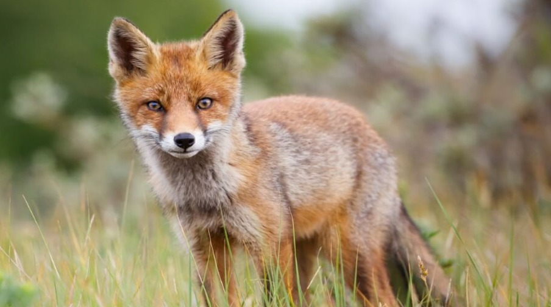
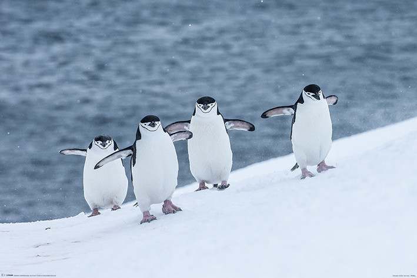
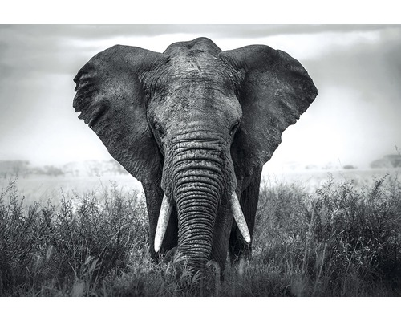
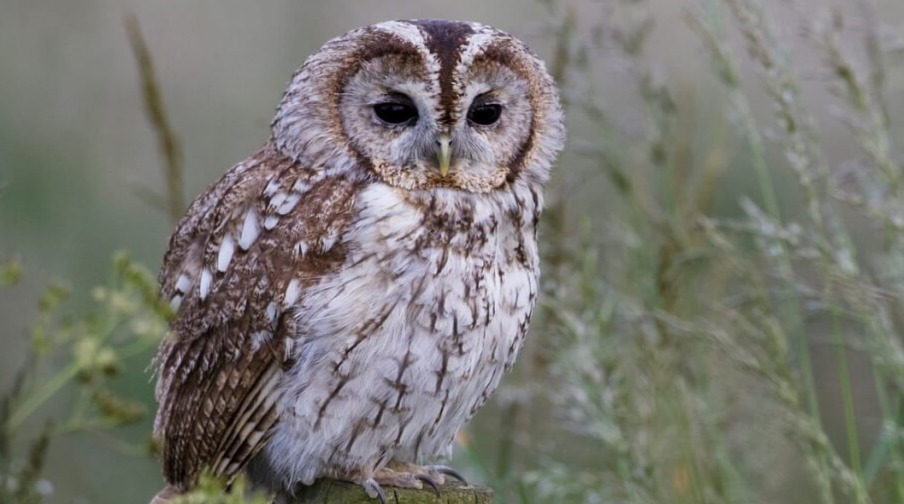
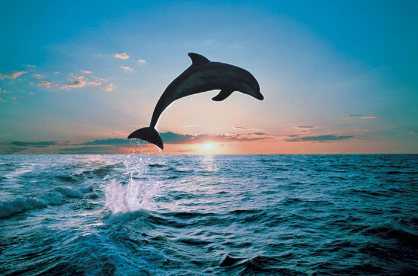

Líška
Šelma s hustým chvostom, ktorá žije aj na Slovensku.

Tučniak
Vták, ktorý nelieta, ale výborne pláva v studenom mori.

Slon
Najväčšie suchozemské zviera s dlhým chobotom.

Panda
Medveď, ktorý sa živí hlavne bambusom.

Sova
Nočný lovec s tichým letom a veľkými očami.

Delfín
Múdry morský cicavec, ktorý sa dorozumieva pískaním.